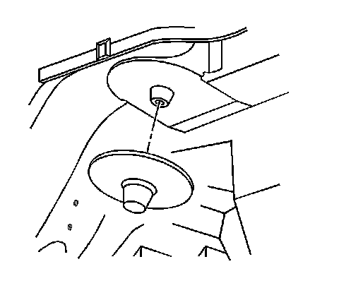
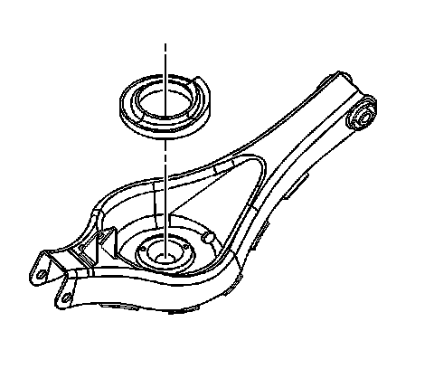

Coil Spring Insulators Replacement
Coil Spring Insulators Replacement
Removal Procedure
1. Raise and support the vehicle. Refer to Lifting and Jacking the Vehicle (Service and Repair) .
2. Remove the rear coil spring. Refer to Coil Spring Replacement (Coil Spring Replacement) .

3. Remove the upper coil spring insulator.

4. Remove the lower coil spring insulator.
Installation Procedure
1. Install the upper coil spring insulator.
2. Install the lower coil spring insulator.
3. Install the rear coil spring. Refer to Coil Spring Replacement (Coil Spring Replacement) .
4. Lower the vehicle.
5. Adjust the rear camber. Refer to Rear Camber Adjustment (Service and Repair) .